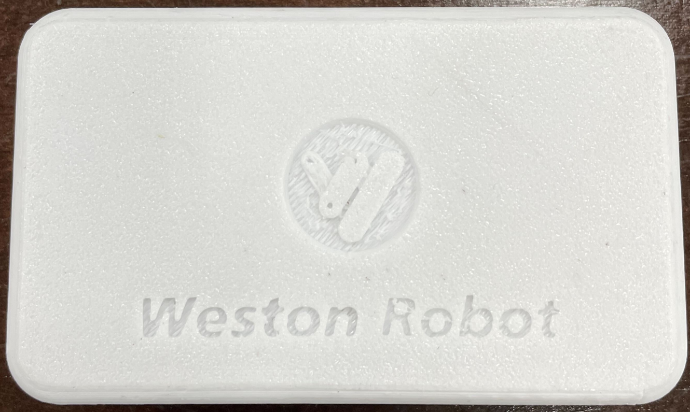
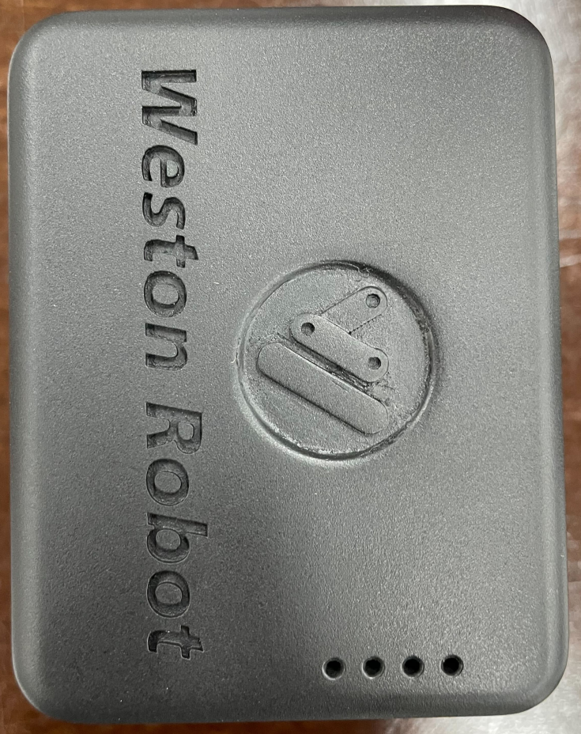
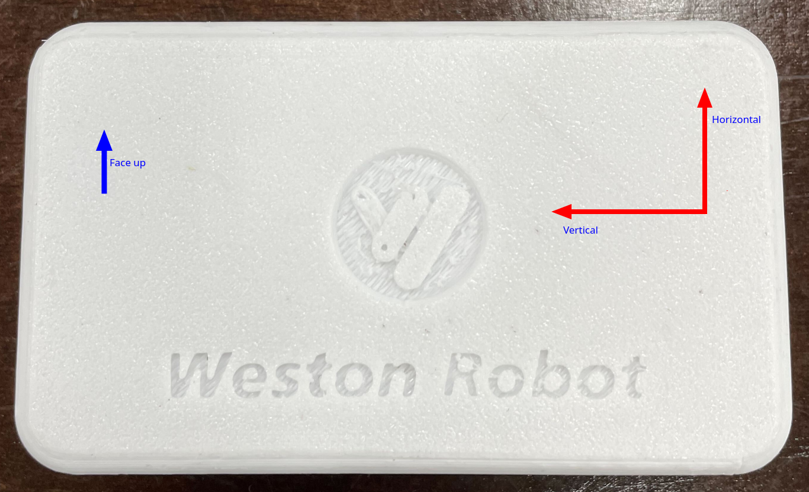
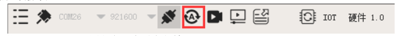
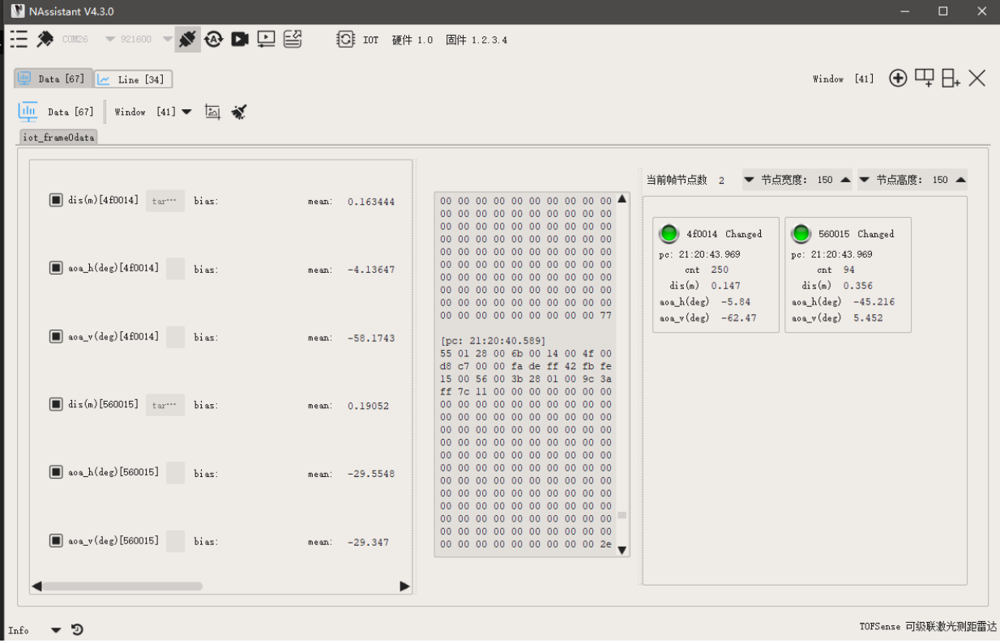
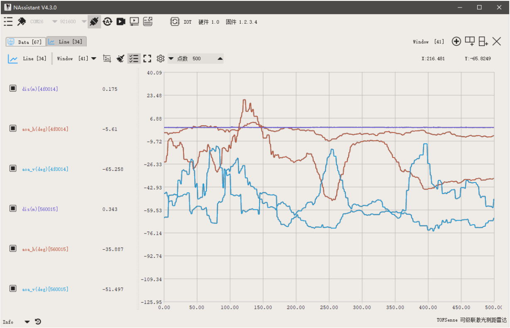

IOT UWB V2 User Guide¶
Revision History¶
Revision |
Date (DD/MM/YYYY) |
Author |
Changes |
|---|---|---|---|
1 |
04/08/2022 |
Hans |
Initial release |
2 |
11/08/2022 |
Hans |
Fix in anchor module axes |
1. Overview¶
The IOT UWB system is designed by Weston Robot for mobile robot applications. It has the following features:
1 Anchor to Multiple Tags “pairing”
Distance Measurement Accuracy: ±5cm
Angular Position Accuracy: ±5°
Anchor Interface: ROS1, Windows/Ubuntu App
2. Specifications¶
2.1 Anchor Module¶

Port
Protocol
Function
Micro-usb
USB
communication interface
2.2 Tag Module¶

Port
Function
Micro-usb
charging of battery
Button
ON/OFF Toggle
2.3 Communication¶
No. of Modules - Number of active tag modules. |Feedback Packet rate - Rate which Anchor sends a feedback packet. |Average Node Update Rate - Average rate which nodes are updated within the feedback packet. |Average Packet Loss - Percentage of packet loss between modules. |
No. of Modules
Feedback Packet Rate
Avg. Node Update Rate
Average Packet loss
1
8.15 hz
8.15 hz
19%
2
9.3 hz
8.19 hz
18%
5
9.87 hz
8.14 hz
19%
10
9.77 hz
7.97 hz
20%
20
9.95 hz
7.68 hz
23%
40
10.03 hz
6.65 hz
34%
3. Hardware Setup¶
3.1 Startup and Operation¶
3.1.1 Anchor Module¶
Connect the module to the computer via a micro-usb cable.
Upon start up, you should see a solid blue led and flashing green led.
3.1.2 Tag Module¶
To switch on, press single press the button.
Upon start up, the 4 blue leds will light up, indicating battery level.
To switch off, quickly double press the button.
3.1.3 Operating Conditions¶
Each module should be upright and have their front (face with logo) facing each other for optimal communications setup
Horizontal and Vertical angles are according to the anchor module’s coordinate system (shown below)

4. Software Setup¶
- There are 2 ways to interface with the Anchor modules out-of-the-box.
NAssistant (Windows or Ubuntu)
ROS1 Driver
4.1 NAssistant¶
4.1.1 Getting NAssistant¶
NAssistant can be downloaded from this link: https://www.nooploop.com/en/download/
4.1.2 Setting up¶
Connect the Anchor module to the computer.
Connection should open automatically.
Click on the button below to automatically identify tag protocol.

4.1.3 Visualisation¶
Data tab can be used to see information such as raw data and node IDs.

Line tab can be used to observe changes in each variable.

4.2 ROS1 Driver¶
4.2.1 Setting up¶
The ROS1 driver can be found here: https://github.com/westonrobot/nlink_parser.Follow the README guide on the github repo to setup the anchor for communication with tag modules.
4.2.2 Running¶
$ roslaunch nlink_parser iot.launch
Parameters
Parameter |
Description |
Default |
|---|---|---|
port_name |
port to the anchor module |
“/dev/ttyUSB0” |
baud_rate |
baud rate of the module |
921600 |
Published Topics
Topics |
Message Format |
Description |
|---|---|---|
/nlink_iot_frame0 |
nlink_parser::IotFrame0 |
Data from detected tags (<=10 tags) |